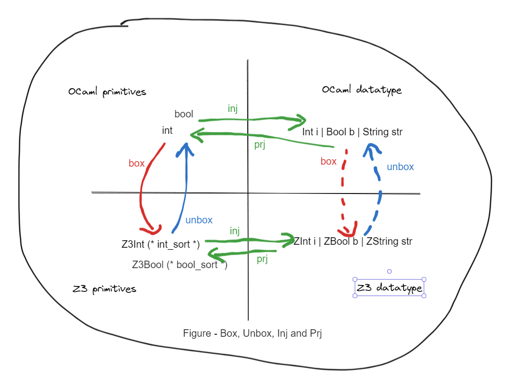

Using Z3.Datatype
Introduction
This post is for explaining some concepts and show usage for library ocaml-z3 and my library fairy_z3. My long-time goal is to make Solve Anything easy in OCaml, and this is just a first step.
Roughly, z3 has coresponding data structures for expressions, primitive types and datatypes, as like these in OCaml. I will not discuss the details of logic or theory used in a SMT solver Z3. We can just treat it as versatile library.
To clarify,
- primitive types in OCaml, e.g.
int,boolean,float,string. - datatypes in OCaml, variants or records,
type t1 = Foo of int * string | Bar of int,type t2 = {a : int; b : float}.
In the current ocaml-z3 implementation, there is just one syntactic type Z3.Expr.expr for all z3 expressions and one syntactic type Z3.Sort.sort for the their types. To make this post more clear, we assume there is a better type definition that carries the correct sort of the expression. e.g. Z3Int 42 : Z3_int_exp. (It could be my second step for the long-time goal). Again,
- primitive types in z3, e.g.
Z3_int,Z3_boolean. - datatypes in Z3 e.g.
Z3_t1,Z3_t2.
Both OCaml and z3 provide the ways to construct and operate on primitive types. In OCaml, a datatype is easy to define. However, it takes some effect to construct a datatype with ocaml-z3 and use it. That's what this post and fairy_z3 targets.
Box, Unbox, Inject, Project

(Mermaid cannot handle nicely diagram in this isometric layout so I have to use excalidraw..)
We have four arrow groups:
-
(Solid green lines) In the OCaml land,
inj(inject) andprj(project) are supported by the language. Given the typet1above,injis to construct from primitive values to a value in typet1and theprjis to pattern match a value in typet1. -
(Solid red/blue lines) Between the primitive types of OCaml land and Z3 land. We choose the terms
boxandunboxto describe a value is to/from another representation in the perspective of OCaml. These functions are on-the-shelf.
let box_int : int -> Z3.Expr.expr =
fun i ->
Z3.Arithmetic.Integer.mk_numeral_i ctx i
let unbox_int : Z3.Expr.expr -> int =
fun e ->
e |> Z3.Arithmetic.Integer.get_big_int
|> Big_int_Z.int_of_big_int
Line 1, characters 22-34:
Error: Unbound module Z3
-
(Another solid green lines) In the Z3 land,
injandprjare achievable but tedious to write. We will demonstrate it in the later section and then advocate usingfairy_z3.ppxto derive them instead. -
(Dotten red/blue lines) Between the datatypes of OCaml land and Z3 land. The
boxandunboxfor datatypes are made of the above three groups.
Making Z3 Datatype by hand
Z3 has tutorial and api manual. Now I cannot remember how I figured out how to use it. Some z3 issues definitely helped.
If you have a glance of its api, you can find constructor, recognizer, accessor as well as sort and func_decl. Conceptually, func_decl are functions in Z3 land and sort are types in Z3 land. constructor, recognizer and accessor are certain functions and their functionalities are like the OCaml functions around OCaml datatypes but in Z3 land.
We first prepare the helper Z3 definitions in the group 2.
# #require "z3";;
# open Z3;;
# let ctx = mk_context [];;
val ctx : context = <abstr>
# let int_sort = Arithmetic.Integer.mk_sort ctx;;
val int_sort : Sort.sort = <abstr>
# let int_sort = Arithmetic.Integer.mk_sort ctx;;
val int_sort : Sort.sort = <abstr>
# let string_sort = Seq.mk_string_sort ctx;;
val string_sort : Sort.sort = <abstr>
# let box_int : int -> Z3.Expr.expr =
fun i ->
Z3.Arithmetic.Integer.mk_numeral_i ctx i
val box_int : int -> Expr.expr = <fun>
# let unbox_int : Z3.Expr.expr -> int =
fun e ->
e |> Z3.Arithmetic.Integer.get_big_int
|> Big_int_Z.int_of_big_int
val unbox_int : Expr.expr -> int = <fun>
# let box_string s = Seq.mk_string ctx s;;
val box_string : string -> Expr.expr = <fun>
# let unbox_string e = Seq.get_string ctx e;;
val unbox_string : Expr.expr -> string = <fun>
Then we define the example type t1. We also write a few functions ctor_*_ml(constructor), rzer_*_ml(recognizer), asor_*_ml(accessor) in OCaml land just for illustrating.
# type t1 = Foo of int * string | Bar of int;;
type t1 = Foo of int * string | Bar of int
# let ctor_foo_ml (i,s) = Foo (i,s);;
val ctor_foo_ml : int * string -> t1 = <fun>
# let rzer_foo_ml = function | Foo (_, _) -> true | _ -> false;;
val rzer_foo_ml : t1 -> bool = <fun>
# let asor_foo_0_ml = function | Foo (i, _) -> i | _ -> failwith "only foo";;
val asor_foo_0_ml : t1 -> int = <fun>
Now we are in Z3 land. We can make the constructors and the sort.
# Datatype.mk_constructor_s;;
- : context ->
string ->
Symbol.symbol ->
Symbol.symbol list ->
Sort.sort option list -> int list -> Datatype.Constructor.constructor
= <fun>
# let ctor_foo = Datatype.mk_constructor_s ctx "Foo"
(Symbol.mk_string ctx "is-Foo")
[ Symbol.mk_string ctx "Foo-0"; Symbol.mk_string ctx "Foo-1" ]
[ Some int_sort; Some string_sort ]
[ 1; 1 ];;
val ctor_foo : Datatype.Constructor.constructor = <abstr>
# let ctor_bar = Datatype.mk_constructor_s ctx "Bar"
(Symbol.mk_string ctx "is-Bar")
[ Symbol.mk_string ctx "Bar-0" ]
[ Some int_sort ] [ 1 ];;
val ctor_bar : Datatype.Constructor.constructor = <abstr>
# let t1_sort = Datatype.mk_sort_s ctx "t1_sort" [ ctor_foo; ctor_bar ];;
val t1_sort : Sort.sort = <abstr>
We make a constructor for each variant tag e.g. ctor_foo and in each tag we specify each payload type e.g. int (in `Foo of int * string) its name, sort, and whether it's recursive (non-zero means non-recursive).
A constructor is a variant tag description that used to make a sort. To apply a constructore, we need to first get the associated function a.k.a. func_decl in Z3 land. Then we apply this function in Z3 land via FuncDecl.apply.
# let ctor_f_foo = Datatype.Constructor.get_constructor_decl ctor_foo;;
val ctor_f_foo : FuncDecl.func_decl = <abstr>
# let ctor_f_bar = Datatype.Constructor.get_constructor_decl ctor_bar;;
val ctor_f_bar : FuncDecl.func_decl = <abstr>
# let e1_ = Foo (42, "camel");;
val e1_ : t1 = Foo (42, "camel")
# let e1 = ctor_foo_ml (42, "camel");;
val e1 : t1 = Foo (42, "camel")
# let e1_z3 = FuncDecl.apply ctor_f_foo [box_int 42; box_string "camel"];;
val e1_z3 : Expr.expr = <abstr>
# Expr.to_string e1_z3;;
- : string = "(Foo 42 \"camel\")"
Now we have already make a Z3 expression of t1_sort. We can also make constraint and solve on it. e.g. we can ask to solve (Foo x "camel") == (Foo 42 "camel") then x is 42.
# let solver = Solver.mk_solver ctx None;;
val solver : Solver.solver = <abstr>
# let e2_z3 = FuncDecl.apply ctor_f_foo [Arithmetic.Integer.mk_const_s ctx "x"; box_string "camel"];;
val e2_z3 : Expr.expr = <abstr>
# let solver_result = Solver.check solver [Boolean.mk_eq ctx e1_z3 e2_z3];;
val solver_result : Solver.status = Z3.Solver.SATISFIABLE
# match solver_result with Solver.SATISFIABLE ->
(match Solver.get_model solver with
| Some model -> Model.to_string model
| None -> "no model")
| _ -> "not sat";;
- : string = "(define-fun x () Int\n 42)"
Now we have all the ingredients to write inj functions in Z3 land and the box from OCaml to Z3.
# let inj_foo (ei,es) = FuncDecl.apply ctor_f_foo [ei; es];;
val inj_foo : Expr.expr * Expr.expr -> Expr.expr = <fun>
# let inj_bar ei = FuncDecl.apply ctor_f_bar [ei];;
val inj_bar : Expr.expr -> Expr.expr = <fun>
# let box_t1 = function
| Foo (i,s) -> inj_foo (box_int i, box_string s)
| Bar i -> inj_bar (box_int i);;
val box_t1 : t1 -> Expr.expr = <fun>
# box_t1 (Foo (101, "dog")) |> Expr.to_string;;
- : string = "(Foo 101 \"dog\")"
rzer_*(recognizer) and asor_*(accessor) are got from t1_sort.
# #show t1;;
type nonrec t1 = Foo of int * string | Bar of int
# let rzer_foo, rzer_bar =
match Datatype.get_recognizers t1_sort with
| [ rzer_foo; rzer_bar ] -> (rzer_foo, rzer_bar)
| _ -> failwith "recogniziers mismatch";;
val rzer_foo : FuncDecl.func_decl = <abstr>
val rzer_bar : FuncDecl.func_decl = <abstr>
# let (asor_foo_0, asor_foo_1), asor_bar_0 =
match Datatype.get_accessors t1_sort with
| [ [ asor_foo_0; asor_foo_1 ]; [ asor_bar_0 ] ] -> ((asor_foo_0, asor_foo_1), (asor_bar_0))
| _ -> failwith "accessors mismatch";;
val asor_foo_0 : FuncDecl.func_decl = <abstr>
val asor_foo_1 : FuncDecl.func_decl = <abstr>
val asor_bar_0 : FuncDecl.func_decl = <abstr>
Recognizers share the shape of variant cases. Accessors share the shape of variant cases and the inner payload types. It's also the same shape with the constructors.
# let ei = FuncDecl.apply rzer_foo [e1_z3];;
val ei : Expr.expr = <abstr>
# Expr.to_string ei;;
- : string = "((_ is Foo) (Foo 42 \"camel\"))"
Here comes the subtle question. FuncDecl.apply builds a function application in Z3 land, but it's just an unevaluated expression.
# let unbox_bool v = match Boolean.get_bool_value v with | L_TRUE -> true | L_FALSE -> false | _ -> failwith "L_UNDEF";;
val unbox_bool : Expr.expr -> bool = <fun>
# unbox_bool ei;;
Exception: Failure "L_UNDEF".
It's not a problem for the box direction because we can evaluate in OCaml land, box the result, and build the Z3 expression. To force the evaluation in Z3 land, we can use Expr.simplify ctx.
# let ei' = Expr.simplify ei None;;
val ei' : Expr.expr = <abstr>
# Expr.to_string ei';;
- : string = "true"
# unbox_bool ei';;
- : bool = true
Now we have all the ingredients to write prj functions in Z3 land and the unbox from Z3 to OCaml.
# let is_foo e = FuncDecl.apply rzer_foo [ e ];;
val is_foo : Expr.expr -> Expr.expr = <fun>
# let prj_foo_0 e = FuncDecl.apply asor_foo_0 [ e ];;
val prj_foo_0 : Expr.expr -> Expr.expr = <fun>
# let prj_foo_1 e = FuncDecl.apply asor_foo_1 [ e ];;
val prj_foo_1 : Expr.expr -> Expr.expr = <fun>
# let is_bar e = FuncDecl.apply rzer_bar [ e ];;
val is_bar : Expr.expr -> Expr.expr = <fun>
# let prj_bar_0 e = FuncDecl.apply asor_bar_0 [ e ];;
val prj_bar_0 : Expr.expr -> Expr.expr = <fun>
# let unbox_t1 e =
match e with
| _ when Expr.simplify (is_foo e) None |> unbox_bool ->
Foo
( Expr.simplify (prj_foo_0 e) None |> unbox_int,
Expr.simplify (prj_foo_1 e) None |> unbox_string )
| _ when Expr.simplify (is_bar e) None |> unbox_bool ->
Bar
( Expr.simplify (prj_bar_0 e) None |> unbox_int )
| _ -> failwith "not here";;
val unbox_t1 : Expr.expr -> t1 = <fun>
# unbox_t1 e1_z3;;
- : t1 = Foo (42, "camel")
All set for our expected functions!
Making Z3 Datatype by fairy magic
If you don't want to write the above functions, just use fairy_z3.ppx. To check the generated function, change [@@deriving ..] to [@@deriving_inline ..] [@@@end].
type t1 = Foo of int * string | Bar of int
[@@deriving z3 ~flag ~bv_width:52]
Summary and To-do
- Read (ocaml-)z3 source code to understand its datatype API better.
- Support more type constructors in OCaml.
- Allow more customizing for primitives box and unbox function.
- Make it more easier to use.
- Add more testing.